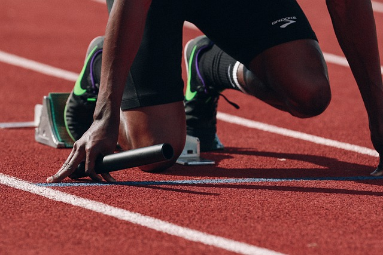

- Basketball :
Description : Le basketball est un sport d'équipe joué sur un terrain avec un panier.
Il met en avant la rapidité, le saut et la coordination.
Entraînements : Les entraînements de basketball comprennent des exercices de dribble, des tirs au panier,
des techniques de défense et des matchs pratiques. Les séances ont lieu les mercredis et vendredis de 17h00 à 19h00.

- Danse :
Description : La danse est une forme d'expression artistique qui combine le mouvement corporel,
la musique et la créativité. Elle encourage la coordination, la grâce et l'expression de soi.
Entraînements : Les cours de danse comprennent des séances d'échauffement, des chorégraphies,
et des exercices pour améliorer la flexibilité et la technique. Les séances ont lieu les lundis et mercredis de 19h00 à 21h00.

- Athlétisme :
Description : L'athlétisme englobe diverses disciplines, dont la course, le saut en hauteur, le lancer du poids et bien d'autres.
Il favorise la vitesse, la force et l'endurance.
Entraînements : Les entraînements d'athlétisme comprennent des séances de course, de sauts et de lancers.
Les athlètes peuvent choisir les disciplines qui les intéressent le plus. Les séances ont lieu les lundis et jeudis de 15h00 à 17h00.
